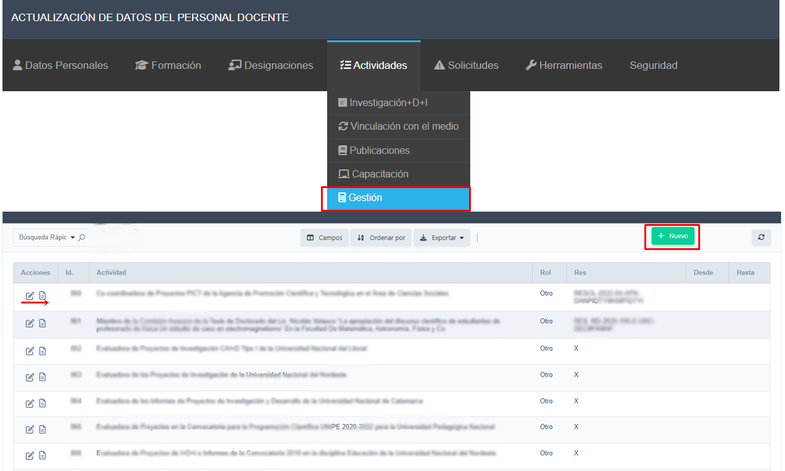

Ingresar en Menú Actividades -> Gestión
Se visualiza la siguiente interfaz, para registrar las actividades de Gestión que desempeñó en los últimos 3 años e indicar las resoluciones que avalen su participación.
Para visualizar o editar las actividades de gestión debe hacer clic en el icono de editar de la actividad en cuestión
Luego se observará la siguiente:

Actualice la información necesaria. En el campo Resolución tenga presente respetar la nomenclatura en caso de tratarse de una resolución de la Universidad. En el icono de ayuda puede corroborar lo mencionado.